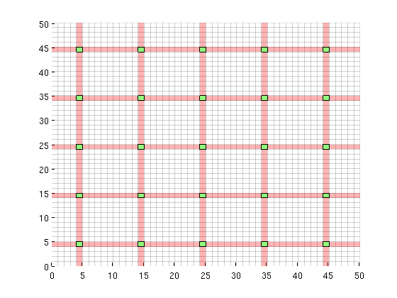
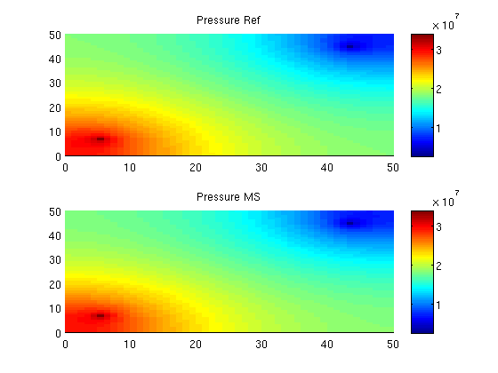
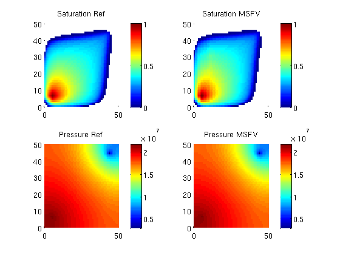

Contents
- A simple two phase problem solved using the Multiscale Finite Volume method
- Construct simple 2D Cartesian test case
- Generate dual grid
- Visualize
- Uniform permeability
- Define a simple 2 phase fluid
- Setup a producer / injector pair of wells
- Set up solution structures with only one phase
- Set up pressure and transport solvers
- Solve initial pressure in reservoir
- Transport loop
- Start the main loop
A simple two phase problem solved using the Multiscale Finite Volume method
The multiscale finite volume method can easily be used in place of a regular pressure solver for incompressible transport. This example demonstrates a two phase solver on a 2D grid.
mrstModule add coarsegrid msfvm
Construct simple 2D Cartesian test case
nx = 50; ny = 50;
Nx = 5; Ny = 5;
G = cartGrid([nx ny]);
G = computeGeometry(G);
% Plot each timestep
doPlot = true;
p = partitionUI(G, [Nx, Ny]);
CG = generateCoarseGrid(G, p);
Generate dual grid
DG = partitionUIdual(CG, [Nx, Ny]);
Visualize
clf; plotDual(G, DG)
Uniform permeability
rock.perm = repmat(100*milli*darcy, [G.cells.num, 1]); rock.poro = repmat(0.3 , [G.cells.num, 1]); T = computeTrans(G, rock);
Define a simple 2 phase fluid
fluid = initSimpleFluid('mu' , [ 1, 10]*centi*poise , ... 'rho', [1014, 859]*kilogram/meter^3, ... 'n' , [ 2, 2]);
Setup a producer / injector pair of wells
rate = 10*meter^3/day; bhp = 1*barsa; radius = 0.05; % Injector in lower left corner W = addWell([], G, rock, round(nx/8) + nx*round(ny/8), ... 'Type', 'rate' , 'Val', rate, ... 'Radius', radius, 'InnerProduct', 'ip_tpf', ... 'Comp_i', [1, 0]); % Producer in upper right corner W = addWell(W, G, rock, round(7*nx/8) + nx*round(7*ny/8), ... 'Type', 'bhp' , 'Val', bhp, ... 'Radius', radius, 'InnerProduct', 'ip_tpf', ... 'Comp_i', [0, 1]);
Set up solution structures with only one phase
refSol = initState(G, W, 0, [0, 1]);
msSol = initState(G, W, 0, [0, 1]);
gravity off
verbose = false;
Set up pressure and transport solvers
We
% Reference TPFA r_psolve = @(state) incompTPFA(state, G, T, fluid, 'wells', W); % MsFV using a few iterations to improve flux error psolve = @(state) solveMSFV_TPFA_Incomp(state, G, CG, T, fluid, ... 'Reconstruct', true, 'Dual', DG, 'wells', W,... 'Update', true, 'Iterations', 5, 'Iterator', 'msfvm',... 'Subiterations', 10, 'Smoother', 'dms', 'Omega', 1); % Implicit transport solver tsolve = @(state, dT) implicitTransport(state, G, dT, rock, ... fluid, 'wells', W, ... 'verbose', verbose);
Alternatively we could have defined an explicit transport solver by
tsolve = @(state, dT, fluid) explicitTransport(state, G, dT, rock, fluid, ... 'wells', W, 'verbose', verbose);
Solve initial pressure in reservoir
We solve and plot the pressure in the reservoir at t=0.
refSol= r_psolve(refSol); msSol = psolve(msSol); subplot(2,1,1) plotCellData(G, refSol.pressure); axis tight; colorbar; title('Pressure Ref') cbar = caxis(); subplot(2,1,2) plotCellData(G, msSol.pressure); axis tight; colorbar; title('Pressure MS') caxis(cbar)
Transport loop
We solve the two-phase system using a sequential splitting in which the pressure and fluxes are computed by solving the flow equation and then held fixed as the saturation is advanced according to the transport equation.
T = 20*day(); dT = T/60;
Start the main loop
Iterate through the time steps and plot the saturation profiles along the way.
t = 0; while t < T, % Solve transport equations using the transport solver msSol = tsolve(msSol , dT); refSol = tsolve(refSol, dT); % Update the pressure based on the new saturations msSol = psolve(msSol); refSol = r_psolve(refSol); % Increase time and continue if we do not want to plot saturations if doPlot clf; % Saturation plot subplot(2,2,1) plotGrid(G, 'FaceColor', 'None', 'EdgeAlpha', 0) plotCellData(G, refSol.s(:,1), refSol.s(:,1) > 1e-4); axis tight; colorbar; title('Saturation Ref') caxis([0 1]); subplot(2,2,2) plotGrid(G, 'FaceColor', 'None', 'EdgeAlpha', 0) plotCellData(G, msSol.s(:,1), msSol.s(:,1) > 1e-4); axis tight; colorbar; title('Saturation MSFV') % Align colorbars caxis([0 1]) % Pressure plot subplot(2,2,3) plotCellData(G, refSol.pressure); axis tight; colorbar; title('Pressure Ref') cbar = caxis(); subplot(2,2,4) hs = plotCellData(G, msSol.pressure); axis tight; colorbar; title('Pressure MSFV') caxis(cbar) drawnow end t = t + dT; end